Slide kuliah 2026 · 14 pertemuan (semester 5, 2 SKS)
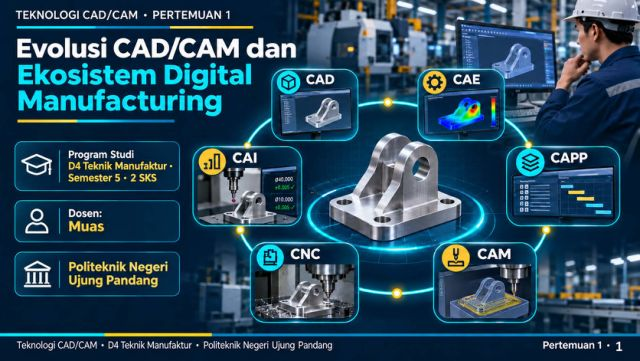
PERTEMUAN 01Evolusi CAD/CAM dan Ekosistem Digital Manufacturing📄 20 slide · PDF
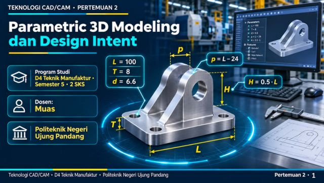
PERTEMUAN 02Parametric 3D Modeling dan Design Intent📄 20 slide · PDF
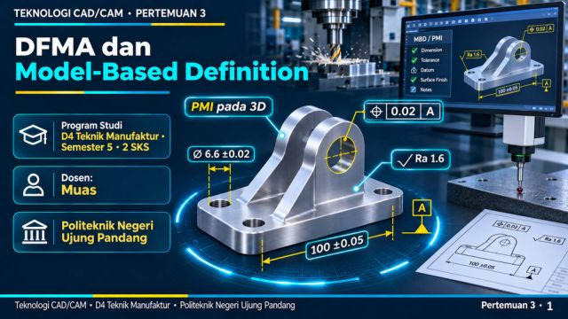
PERTEMUAN 03DFMA dan Model-Based Definition📄 20 slide · PDF
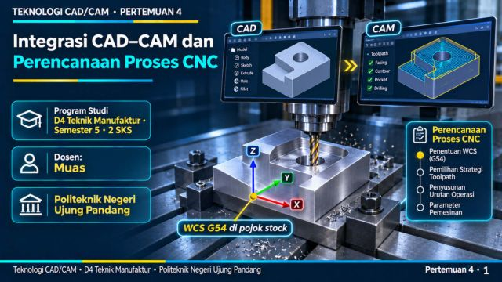
PERTEMUAN 04Integrasi CAD–CAM dan Perencanaan Proses CNC📄 20 slide · PDF
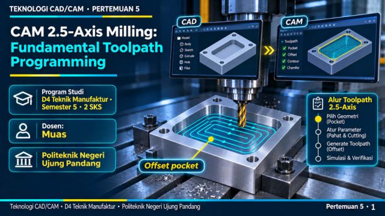
PERTEMUAN 05CAM 2.5-Axis Milling: Fundamental Toolpath Programming📄 20 slide · PDF
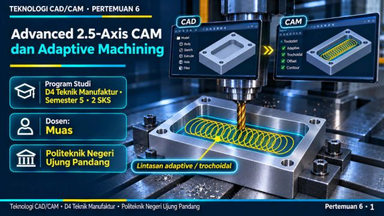
PERTEMUAN 06Advanced 2.5-Axis CAM dan Adaptive Machining📄 20 slide · PDF
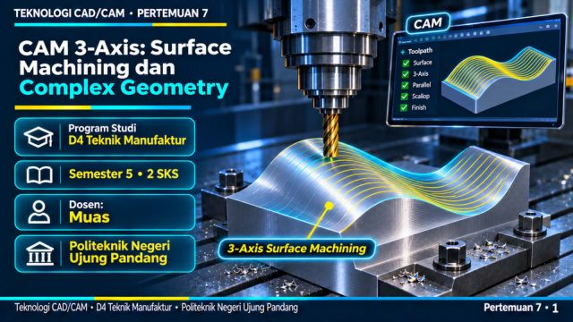
PERTEMUAN 07CAM 3-Axis: Surface Machining dan Complex Geometry📄 20 slide · PDF
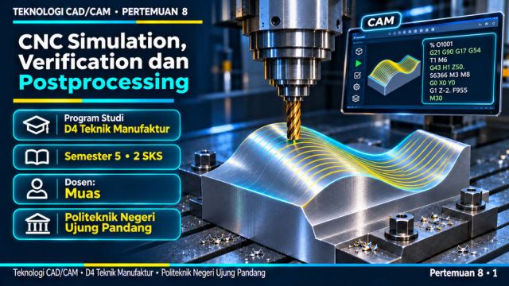
PERTEMUAN 08CNC Simulation, Verification dan Postprocessing📄 20 slide · PDF
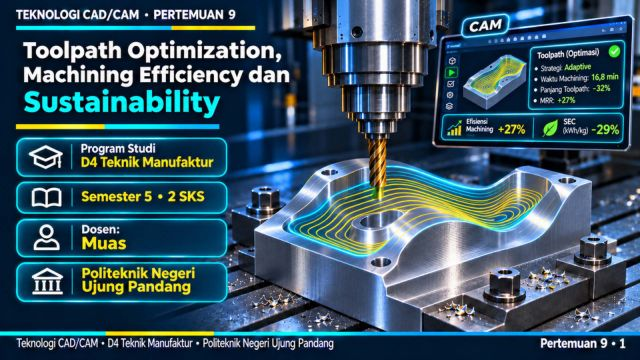
PERTEMUAN 09Toolpath Optimization, Machining Efficiency dan Sustainability📄 20 slide · PDF
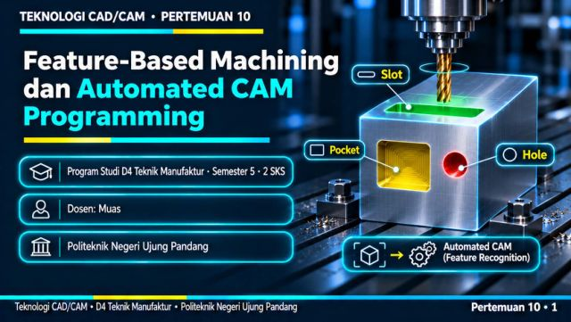
PERTEMUAN 10Feature-Based Machining dan Automated CAM Programming📄 20 slide · PDF
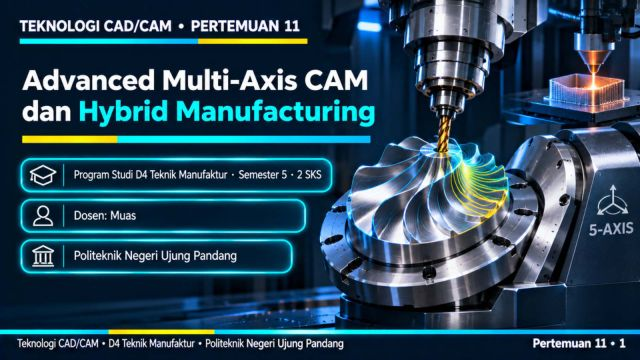
PERTEMUAN 11Advanced Multi-Axis CAM dan Hybrid Manufacturing📄 20 slide · PDF
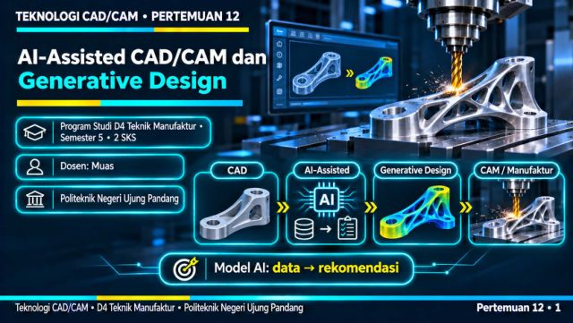
PERTEMUAN 12AI-Assisted CAD/CAM dan Generative Design📄 20 slide · PDF
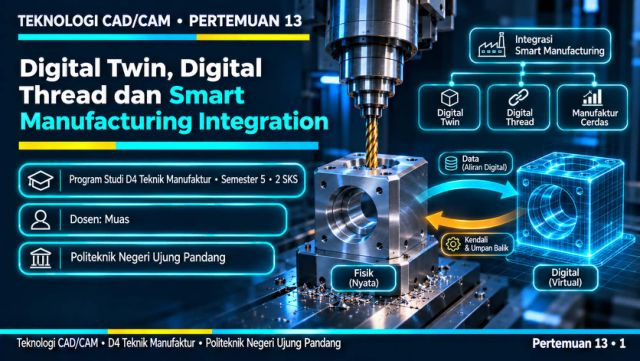
PERTEMUAN 13Digital Twin, Digital Thread dan Smart Manufacturing Integration📄 20 slide · PDF
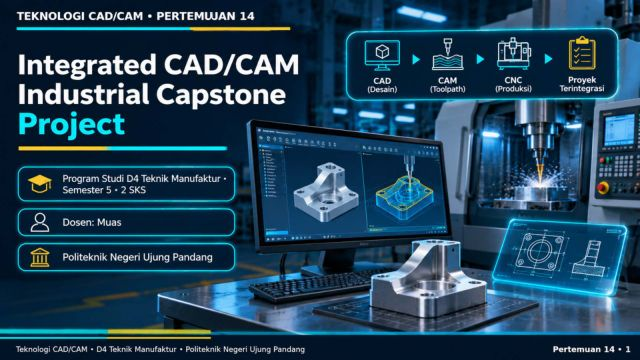
PERTEMUAN 14Integrated CAD/CAM Industrial Capstone Project📄 20 slide · PDF
Praktikum Mastercam
MODUL 1 · CADGeometri 2D: titik, garis, busur, fillet, mirror, dan trim📄 13 halaman · praktikum Milling CNC
MODUL 2 · CAMLintasan pahat 2D (contour) dan simulasi📄 17 halaman · praktikum Milling CNC
BUBUTPeta Konsep Mastercam X4 Bubut📄 1 halaman · alur CAD–CAM bubut